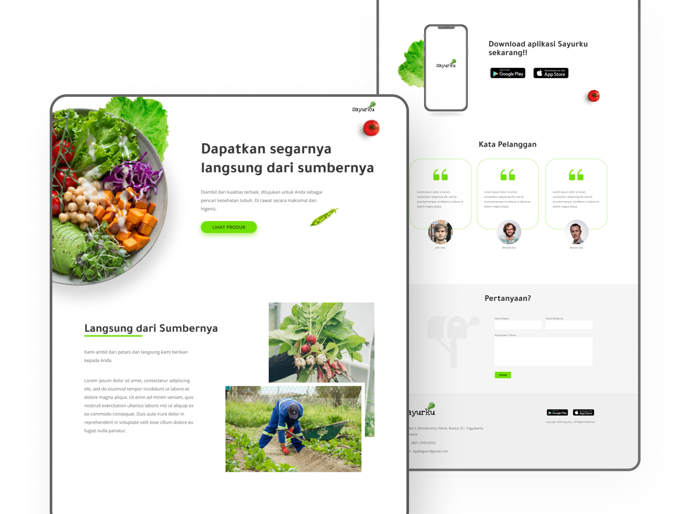

Sayurku - Belanja Sayur Online (Exploration)
UI Designing & Front-End Development

Dalam proyek ini, saya mendesain UI/UX dan mendesain website landing page untuk aplikasi Sayurku. Sayurku merupakan sebuah aplikasi yang dirancang untuk memudahkan calon pembeli dalam pembelian sayur-sayuran dan buah-buahan. Diciptakan landing page ini, bertujuan untuk mengarahkan dan menyarankan mendownload aplikasi di playstore dan app store.
PERMASALAHAN
Aplikasi Sayurku kurang menjangkau banyak audience, karena tempatnya hanya di playstore dan app store.
Oleh karena itu, promosi perlu merambah ke dunia website yang dinamis dan mudah unutk diakses banyak orang.
Sebuah landing page merupakan sebuah solusi untuk menambah jangkauan.
WIREFRAME
ELEMEN

MOCKUP